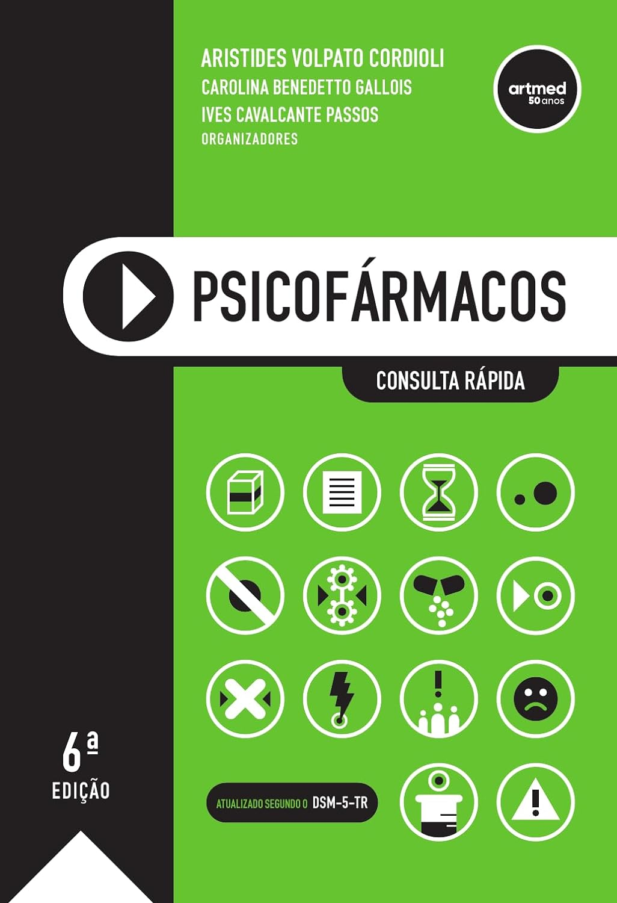
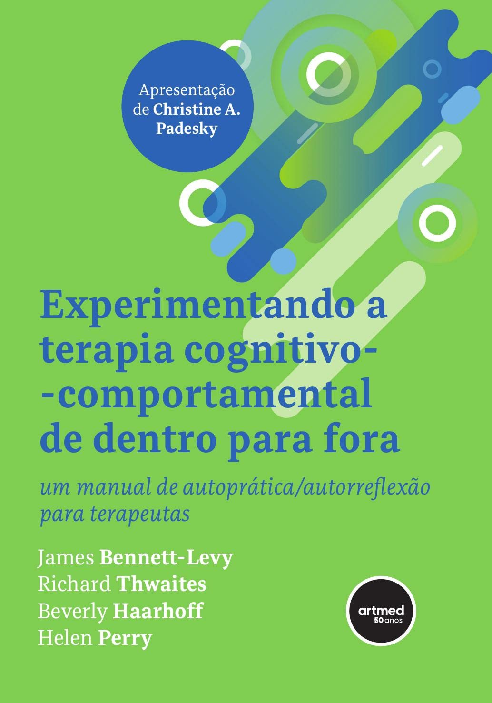
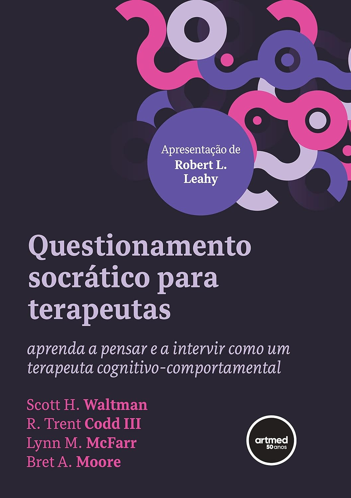

-
American Psychiatric Association
Manual Diagnóstico e Estatístico de Transtornos Mentais - DSM-5-TR: Texto Revisado Acessar -

-
-
-
Robert L. Leahy, Dennis Tirch, Lisa A. Napolitano
Regulação Emocional em Psicoterapia: Um Guia para o Terapeuta Cognitivo-Comportamental Acessar -
Charles R. Swenson
Princípios da Terapia Comportamental Dialética em Ação: Aceitação, Mudança e Dialética na DBT Acessar -

James Bennett-Levy, Richard Thwaites, Beverly Haarhoff (Autor), Helen Perry
Experimentando a Terapia Cognitivo-comportamental de Dentro para Fora: Um Manual de Autoprática/Autorreflexão para Terapeutas Acessar -

Scott H. Waltman, R.Trent Codd, Lynn M. McFarr, Bret A. Moore
Questionamento Socrático para Terapeutas: Aprenda a Pensar e a Intervir como um Terapeuta Cognitivo-comportamental Acessar -
Steven C. Hayes, Kirk D. Strosahl, Kelly G. Wilson
Terapia de Aceitação e Compromisso: O Processo e a Prática da Mudança Consciente Acessar -
-
-

-